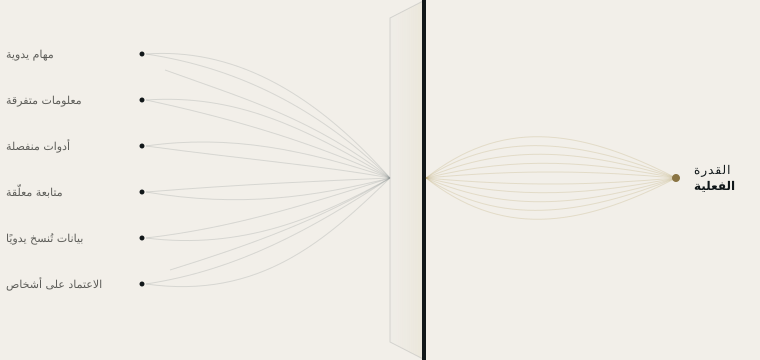

الأتمتة
نحوّل المهام المتكررة إلى عمليات تلقائية، وفق قواعد نحدّدها معك.
أتمتة الموارد
معظم الشركات لا تحتاج إلى مزيد من الأدوات. تحتاج إلى معرفة أين يضيع منها الوقت والمعلومات والتركيز.
تحدّد SKURX SYSTEMS مواضع فقدان القدرة، وتحوّلها إلى أنظمة عمل أوضح وأكثر ترابطًا وكفاءة.
ماذا نفعل
نكتشف أين تفقد شركتك قدرتها، ونحرّرها بالأتمتة وربط الأدوات والذكاء الاصطناعي التطبيقي حيث يكون ذلك مجديًا.

خدماتنا
نحوّل المهام المتكررة إلى عمليات تلقائية، وفق قواعد نحدّدها معك.
لما لا تحلّه قاعدة ثابتة: الذكاء الاصطناعي يعزّز فريقك ولا يحلّ محلّه.
نربط أدواتك حتى تنتقل المعلومات من أداة إلى أخرى دون تدخّل أحد.
كيف نعمل
لا ننطلق من تقنية، بل من سؤال: أين تفقد شركتك قدرتها، ولماذا؟
نتعرّف على شركتك من الداخل، بملاحظة طريقة عمل فريقك كل يوم.
نحدّد أين يضيع الوقت أو المعلومات أو العملاء المحتملون، ولماذا.
نخبرك بما سنغيّره وبما لا يستحق المساس به.
نشغّله ونختبره معك ونضبطه حتى يعمل كما يحتاج فريقك.
الخطوة الأولى
في أسبوع واحد نحلّل طريقة عمل شركتك ونسلّمك خريطة واضحة: ما الذي يستهلك القدرة، وما الذي يمكن أتمتته، وبأي ترتيب. التقرير ملكك، أيًّا كان قرارك.
كل مسار عمل مشروح بلغة واضحة.
الحسابات والأدوات والبيانات ملكك.
يمكنك أن ترى ما قامت به كل عملية أتمتة ومتى.
إذا توقفنا عن العمل معًا، يبقى كل شيء ملكك.
أمثلة حسب القطاع
سيناريوهات توضيحية مبنية على مواقف مألوفة. نعمل مع شركات من جميع القطاعات، في كل أنحاء إسبانيا.
كل شيء يواصل العمل، حتى حين لا يبقى أحد في المكتب.